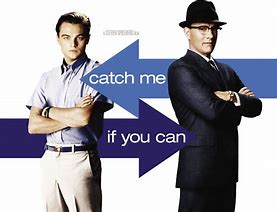

FAVOURITE FILM

From the opening credits design we get in the mood of this very entertaining film. They create the tone for what will follow. Steven Spielberg is in rare form directing this movie that doesn't have a dull moment.
Mr. Spielberg has found a perfect actor to fill the shoes of the con man with the perfect casting of Leonardo DiCaprio. It's very easy to see why all the women fall prey of this charmer. He was a fast talker and a slick operator. He exudes charisma to fill another couple of movies.
It's a welcome sight to have Mr. DiCaprio working in a vehicle that shows his talent as Frank Abagnale, a man of many faces. He plays a game of hide-and-seek throughout the movie with Hanratty, the FBI agent that is in his trail. Tom Hanks shows great assurance and gusto with this character. Of course, the DiCaprio magnetism dominates the action with the many ironic twists and the miraculous and narrow escapes he pulls with an aplomb that's bewildering to the Feds, who are on his tail all the time.
The minor roles are equally important. Christopher Walken as the father starts out as the prototype of the con man, but he's too decent to do wrong; his business fails eventually. His marriage to Natalie Baye, the fine French actress, ends in divorce because obviously she hates being married to a loser.
The action doesn't stop for one moment. This film is great fun to watch with the winning combination Mr. Spielberg assured hand gives us this time out. Mr. Spielberg can thank the genial Mr. DiCaprio who responds obviously to his direction and makes this con man endearing even when he is committing crimes.